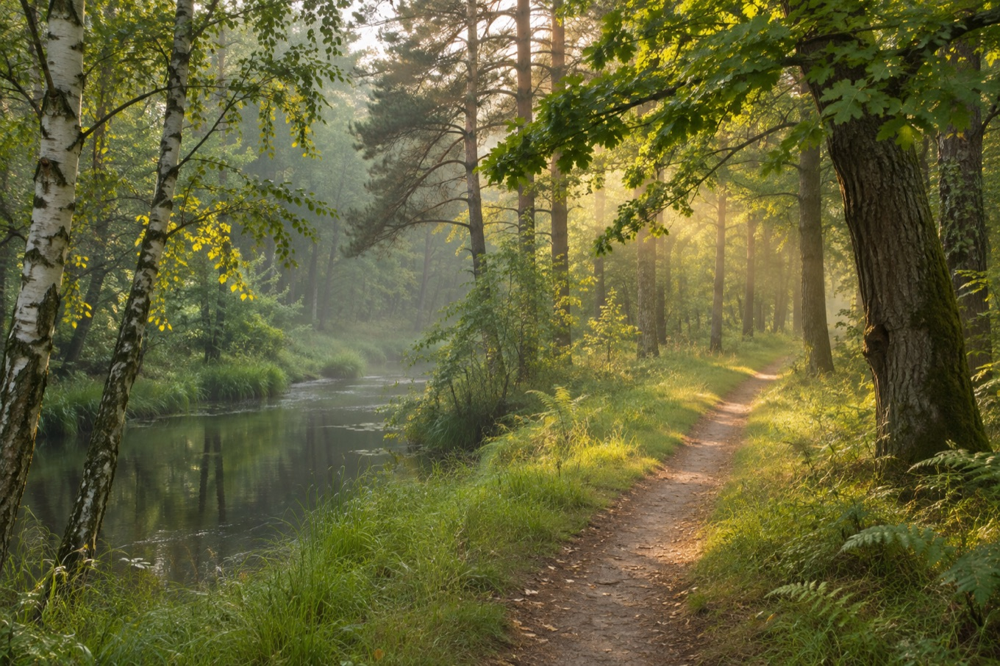

Mikrowyprawy
z Warszawy
A day-trip guide inspired by @mikrowyprawy_z_warszawy.
Browse the Instagram post index
No places match these filters. Try a different activity, age, or distance.
A day-trip guide inspired by @mikrowyprawy_z_warszawy.
Browse the Instagram post index
No places match these filters. Try a different activity, age, or distance.